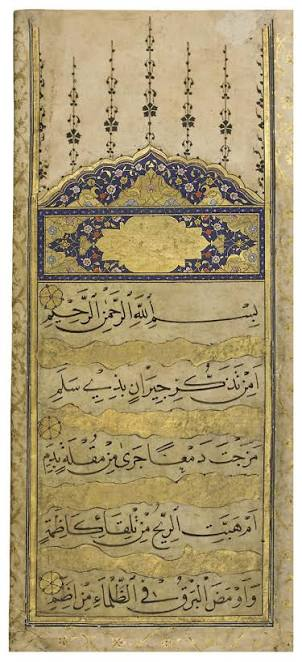

Hey guys. I am a Computer Science major, class of 2027. I do ML/AI work. I also love arabic poetry.
Arabic poems can be really visceral and unique because there are like 100 words for the same thing but each with a specific nuance. So when you study it your mind kind of gets blown and especially when you understand the background history depending on what you are reading

Is it from remebering your neighbors by Dhu Salam,
That you shed tears mixed with blood from your eyes?
Or has the wind blown from the direction of Kazima?
Or lightning struck in the darkness of Idam?
| Course | Title |
|---|---|
| CS 1101 | Introduction to Program Design |
| CS 2102 | Object-Oriented Design Concepts |
Working experience